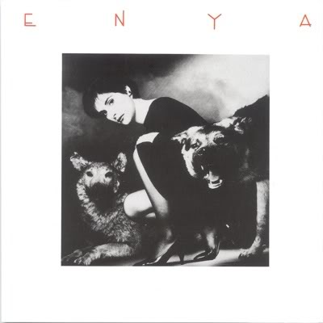
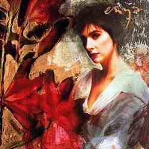
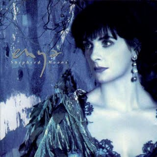
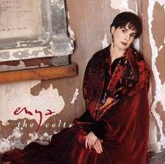

|  |
Enya (1986)
- The Celts – 2:50
- Aldebaran (dedicado a Ridley Scott) – 3:05
- I Want Tomorrow – 4:02
- March of the Celts – 3:10
- Deireadh an Tuath – 1:43
- The Sun in the Stream – 2:55
- To Go Beyond, Pt. 1 – 1:20
- Fairytale – 3:03
- Epona – 1:36
- Triad: St. Patrick / Cú Chulainn / Oisin – 4:25
- Portrait – 1:23 1
- Boadicea – 3:30
- Bard Dance – 1:23
- Dan y Dwr – 1:41
- To Go Beyond, Pt. 2 – 2:50
|
 |
Watermark (1988)
- Watermark - 2:24
- Cursum Perficio - 4:06
- On Your Shore - 3:59
- Storms in Africa - 4:03
- Exile - 4:20
- Miss Clare Remembers - 1:59
- Orinoco Flow - 4:25
- Evening Falls... - 3:46
- River - 3:10
- The Longships - 3:36
- Na Laetha Geal M'Óige - 3:54
- Storms in Africa, Pt. 2 - 3:01
|
 |
Shepherd Moons (1991)
- Shepherd Moons - 3:42
- Caribbean Blue - 3:58
- How Can I Keep from Singing? - 4:23
- Ebudæ - 1:54
- Angeles - 3:57
- No Holly for Miss Quinn - 2:40
- Book of Days - 2:32
- Evacuee - 3:50
- Lothlórien - 2:08
- Marble Halls - 3:53
- Afer Ventus - 4:05
- Smaointe... - 6:07
|
 |
The Celts (1992)
- The Celts – 2:50
- Aldebaran – 3:05
- I Want Tomorrow – 4:02
- March of the Celts – 3:10
- Deireadh an Tuath – 1:43
- The Sun in the Stream – 2:55
- To Go Beyond (I) – 1:20
- Fairytale – 3:03
- Epona – 1:36
- Triad: St. Patrick / Cú Chulainn / Oisín – 4:25
- Portrait (Out of the Blue) – 3:11
- Boadicea – 3:30
- Bard Dance – 1:23
- Dan y Dwr – 1:41
- To Go Beyond (II) – 2:50
|
|
|